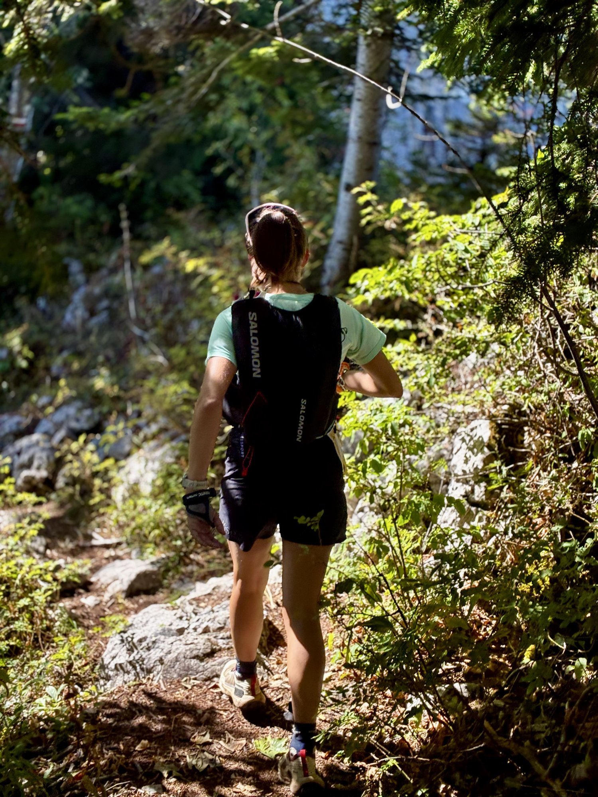
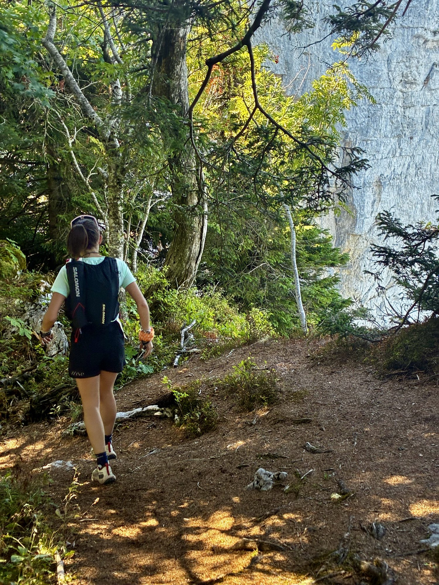
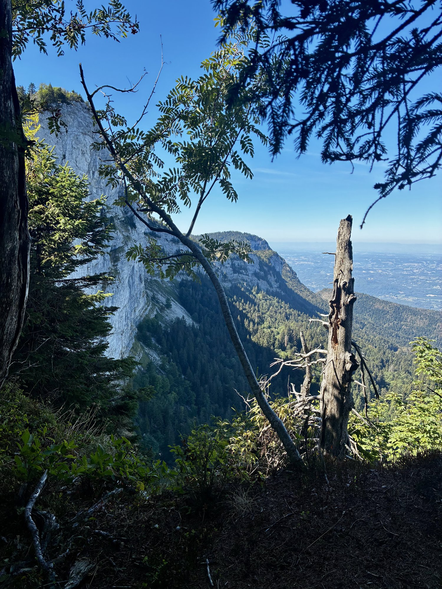
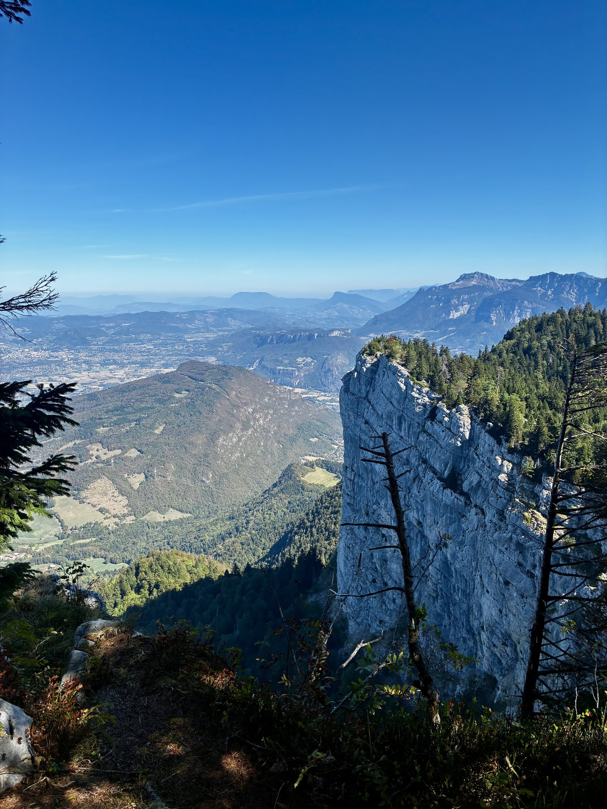
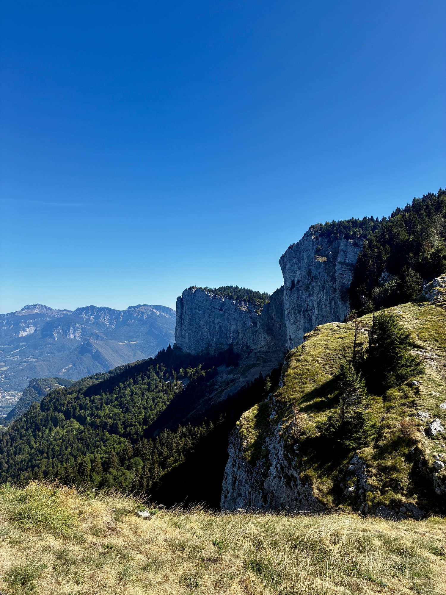
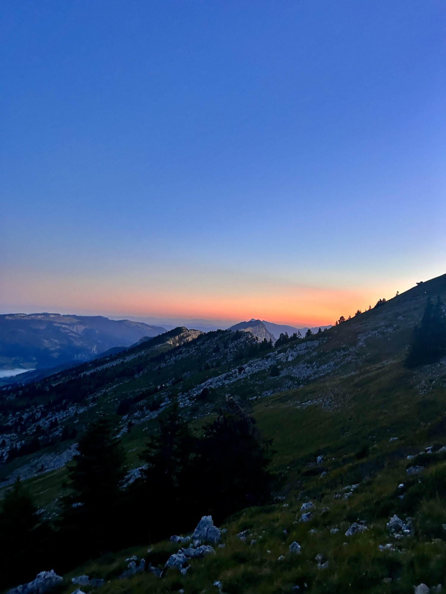
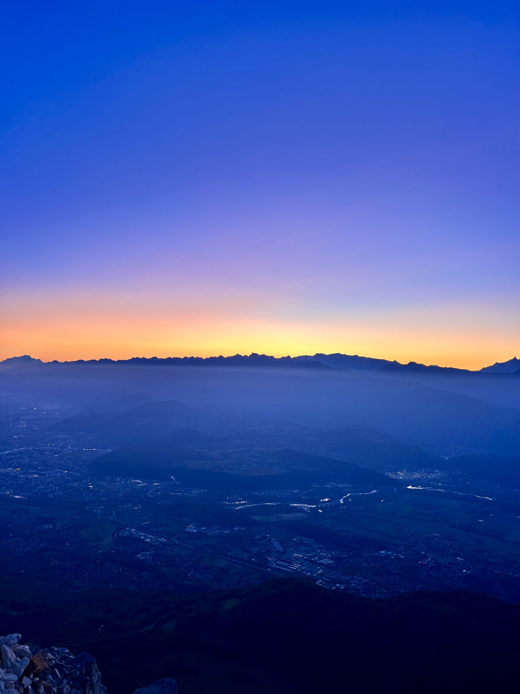
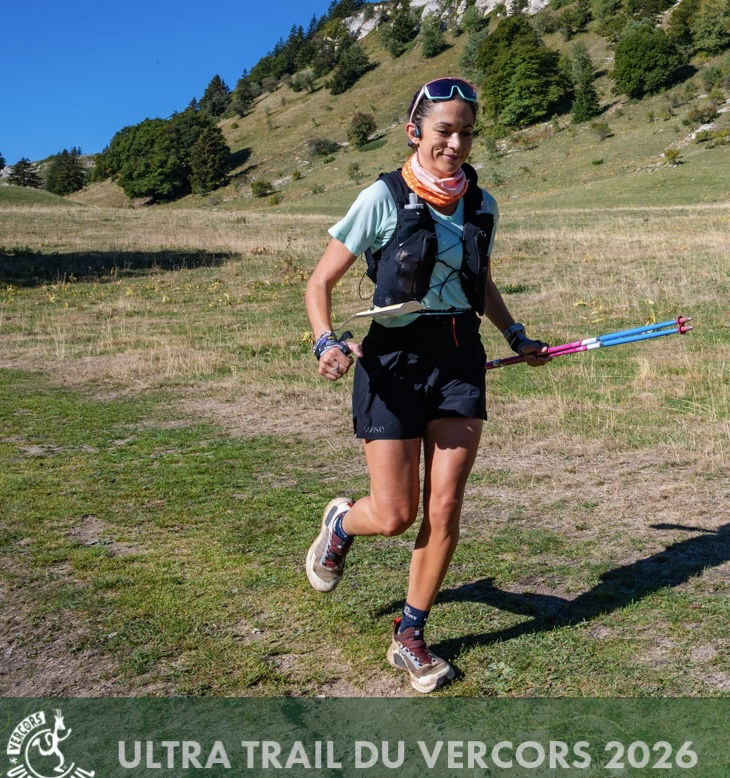

Malade depuis le jeudi, fiévreuse le vendredi matin, arrivée dans le Vercors déjà touchée : Mathilde BAUDELOCQ prend malgré tout le départ de son deuxième ultra, samedi à 5 h. 25ᵉ féminine sur 55 arrivées — pour 73 partantes — et 125ᵉ au scratch sur 247 classés, 340 au départ. Entre les deux, une course qui a cessé très tôt d'être une question de chrono.
- Lieu
- Villard-de-LansIsère
- Distance
- 85 km
- Dénivelé
- 4 300 m D+
- Départ
- 05:00
🏔️ Le récit — L'Ultra Solo
85 km / 4 300 m D+ — Samedi 12 septembre, 05:00
Mathilde BAUDELOCQ a bouclé sa préparation dans la meilleure forme de sa vie. Onze semaines déroulées sans accroc — pas une séance manquée, pas une blessure, pas un pépin. Sur un cycle de cette longueur, c'est assez rare pour être dit.
L'objectif était précis : aller chercher le maximum de ce qu'elle vaut aujourd'hui sur la distance. Un deuxième ultra reste un terrain d'exploration — 85 kilomètres et 4 300 mètres de dénivelé ne se courent pas comme un format court, et ce qu'on y cherche d'abord, c'est son propre plafond. Elle venait le mesurer.
Et puis jeudi, à quarante-huit heures du départ, le nez qui coule. La toux. Le mal de tête. Vendredi matin, la fièvre et des jambes qui refusent de sortir du lit. Elle arrive dans le Vercors le vendredi soir, déjà malade. Onze semaines de travail, et un virus qui s'invite la veille.
Samedi 5 heures, dossard 13 sur la poitrine. Elle est sur la ligne.
Zéro degré et une montée au flambeau
Le départ de l'Ultra Trail du Vercors est de ceux qu'on n'oublie pas. Nuit noire, frontales, un thermomètre proche de zéro — le premier vrai froid après un été de canicule. La montée se fait au flambeau, une file de lumières qui s'étire sur la colline. Puis le jour se lève sur les sommets, et les couleurs prennent les crêtes une à une.
Les premières heures : tout est en ordre, sauf à l'intérieur
Sur le papier, la première partie est parfaite. Elle bascule au Pic Saint-Michel, 1 916 mètres, au bout de 12 kilomètres et 1 090 mètres de dénivelé : 15ᵉ féminine. Elle pointe à Saint-Nizier-du-Moucherotte, aux Merciers, à la Molière, puis à Autrans à la mi-course : 20ᵉ féminine, dans les temps prévus. De l'extérieur, tout est en ordre.
De l'intérieur, non. Dès les premières heures, les signaux arrivent : il faut se moucher sans arrêt, et surtout la trachée et les poumons commencent à chauffer. Le doute, lui, ne l'a jamais vraiment quittée depuis le vendredi matin — il grossit à chaque kilomètre.


Autrans : le moment où tout déraille
C'est après le ravitaillement d'Autrans que la course bascule. Le pacing est respecté, le plan nutrition et hydratation exécuté à la lettre — il le restera jusqu'à la ligne, sans un seul trouble digestif sur quatorze heures et demie. Mais l'énergie s'en va. Et chaque respiration devient brûlante, douloureuse, impossible à prendre profondément.
Le timing est cruel : ce moment tombe exactement sur la portion la plus technique du parcours. Les crêtes, où quatre kilomètres prennent une heure et demie, où les cailloux et les franchissements s'enchaînent. Un décor magnifique qu'elle ne regarde pas. La course devient un combat.
La question du 58ᵉ kilomètre
Au Pas de Pertuson, au 58ᵉ kilomètre, elle a cédé cinq places au féminin. C'est là que se pose la vraie question de la journée : est-ce que je continue ? Est-ce que ça vaut le coup ? Je n'étais pas venue pour ça.
Elle a choisi de continuer. Pas en niant ce qui se passait — en l'acceptant. Le parcours était trop beau, les conditions trop bonnes pour rentrer. Alors l'objectif a changé une deuxième fois : elle n'allait plus jauger sa performance, elle allait juste aller au bout. Rallier Rencurel. Puis finir, coûte que coûte.
Ce que dit le chrono
Et c'est là que les chiffres redeviennent intéressants. Entre le Pas de Pertuson et l'arrivée — les vingt-sept derniers kilomètres, ceux de la souffrance — elle ne perd plus une seule place au féminin et en reprend quatorze au scratch, de la 139ᵉ à la 125ᵉ. Il lui restait 1 450 mètres de dénivelé positif à monter après Rencurel, dont un mur de 460 mètres à 15 %. Elle les a montés en marchant, en mangeant, sans s'arrêter.
Elle franchit la ligne à Villard-de-Lans en 14 h 30'03", après 84,9 kilomètres et près de 4 900 mètres de dénivelé positif réellement mesurés sur la trace — au-delà des 4 300 annoncés. 25ᵉ femme sur 55 arrivées, 125ᵉ sur 247 classés. La médiane du plateau féminin, ce jour-là, était à 15 h 06 : malade, elle la bat de trente-six minutes.
Ce devait être une finalité. C'est devenu une course de préparation — celle qui muscle le mental et apprend l'acceptation. Et un deuxième ultra bouclé, sur un format que très peu de coureurs mènent au bout, un jour où rien n'était réuni pour y arriver.
Résultats officiels — Mathilde Baudelocq
- Temps14 h 30'03"
- Classement Femmes25ᵉ / 55 arrivées (73 partantes)
- Classement scratch125ᵉ / 247 classés (340 partants)
- Catégorie M0 F6ᵉ / 15
- Dossard13
- StatutFinisher ✓
Places reprises entre le Pas de Pertuson (58,2 km) et l'arrivée : +14 au scratch, 0 perdue au féminin. Chronométrage officiel L-Chrono. Données de parcours annoncées par l'organisation : 85 km · 4 300 m D+ ; dénivelé relevé sur la trace GPS officielle : 4 888 m.
🎥 La course en images






Le mot de Mathilde
J'avais fait la meilleure préparation de ma vie, et je tombe malade quarante-huit heures avant le départ. Je suis arrivée dans le Vercors le vendredi soir déjà malade, avec de la fièvre le matin même. Sur la ligne à 5 heures, je n'avais aucune idée de ce qui allait se passer, ni même si j'irais au bout.
Le départ au flambeau et le lever de soleil sur les crêtes, ça je le garde. Mais après Autrans, respirer est devenu une douleur, et j'ai eu envie d'arrêter. J'ai fini par accepter que ce ne serait pas la course que j'étais venue chercher — et que ça ne l'annulait pas pour autant.
« Il n'y a pas de D+ sans D− », dit Clem qui court. Cette fois, tout n'était pas réuni — et avec le dossard 13, disons qu'il ne m'aura pas beaucoup aidée. Alors j'ai pris ce que la journée avait à donner : de l'expérience, et la preuve que je peux aller au bout de 84 kilomètres même quand tout est contre moi.
Merci à l'Ultra Trail du Vercors et aux bénévoles pour cette belle organisation, et à ceux qui étaient sur le bord.
Retour aux communiqués